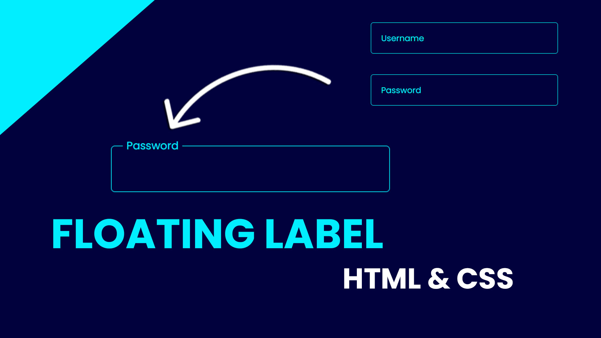

Welcome to the Content Section
This is the main content area of the webpage. The layout changes based on the screen size using media queries. Resize the browser window to see the responsive behavior.
About Our Website
This website is built using modern CSS techniques including Flexbox, Float, and Media Queries. The sidebar remains on the left in desktop view, moves above the content in tablet view, and becomes full width in mobile view.
Float Example

This image is floated to the left, which means text wraps around it. Floats were commonly used for layouts before Flexbox and Grid, but now they are mainly used for wrapping content like this. Notice how the image pushes the paragraph text to the right.
Additional Information
Responsive design is an essential part of modern web development. It ensures that webpages look good on all screen sizes — from large desktops to smartphones. Media queries help developers modify layouts, text sizes, images, and more depending on the device width.